|
|
| cnidarians text index | photo index |
| Phylum Cnidaria > Class Anthozoa > Subclass Zoantharia/Hexacorallia > Order Actiniaria |
| Pizza
anemone Cryptodendrum adhaesivum Family Thalassianthidae updated Jul 2024 Where seen? This rather large anemone is seldom seen, usually tucked in crevices on rocky and rubbly areas under dead corals on our Southern shores. Possibly simply because it just doesn't look like a typical anemone, and because it is usually well hidden. During mass coral bleaching, this anemone is often easier to spot as it bleaches white. Features: Diameter 25-30cm. The flat circular animal has a smooth rounded thick rim - very much like a pizza! The tentacles on the oral disk are short, tiny and tightly packed. The tentacles are very sticky, hence another common name for it is Adhesive anemone. The tentacles come in two forms as described by Dr Fautin, "those in center have a narrow stalk with five or more short branches at end (i.e. resembling a miniature glove); those near the edge simple elongate bulbs about 1 mm diameter; at extreme margin is a ring of tentacles like the central ones but with fewer branches. Tentacles of the two forms are usually different colours: observed combinations include yellow and pink, blue and gray, green and brown; occasionally tentacles of another colour occur in patches amid those of predominant colour." The body column may be brightly coloured; those seen were purple or yellow. Generally smooth with tiny verrucae of the same colour or slightly darker. Pizza friends: The Pizza anemone harbours symbiotic algae (called zooxanthellae) that photosynthesize. The algae share the food produced with the anemone, which in turn provides the algae with shelter and minerals. Several kinds of animals may live happily and unharmed on the Pizza anemone. These include the Peacock-tail anemone shrimp (Periclimenes brevicarpalis). Elsewhere it is said that anemonefishes (Amphiprion sp.) live with these anemones such as Amphiprion bicinctus, A. clarkii and A. xanthurus. But none of these have so far been observed on the Pizza anemones we've seen on the intertidal during low tide. Status and threats: As at 2024, it is listed as Critically Endangered in Singapore. |
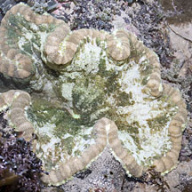 Terumbu Semakau, Jun 12 |
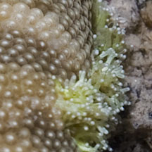 Two different kinds of tentacles. |
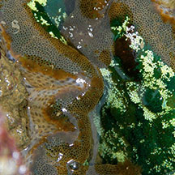 Tiny verrucae on body column.Terumbu Semakau, Jun 12 Photo shared by Russel Low on facebook. |
|
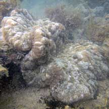 Terumbu Raya, Mar 11 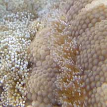 |
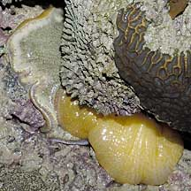 Sisters Island, Jul 04 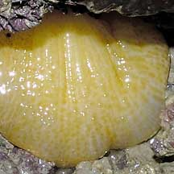 |
| Pizza anemones on Singapore shores |
On wildsingapore
flickr
|
| Other sightings on Singapore shores |
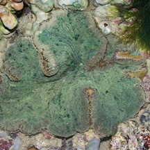 Sisters Island, Jan 11 Photo shared by James Koh on his blog. |
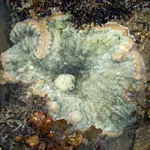 Terumbu Semakau, May 10 Photo shared by Loh Kok Sheng on his blog. |
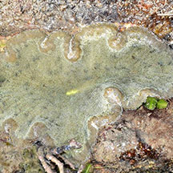 Pulau Semakau South, Apr 18 Photo shared by Loh Kok Sheng on facebook. |
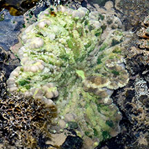 Pulau Semakau East, Jun 25 |
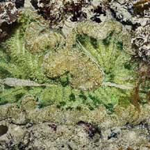 Pulau Pawai, Dec 09 |

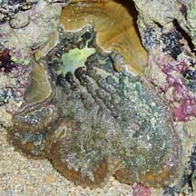 Terumbu Berkas Besar, Jan 10 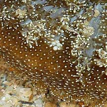 Photo shared by Loh Kok Sheng on his flickr. |
|
Links
|